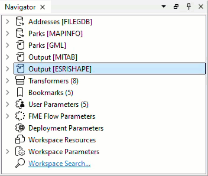
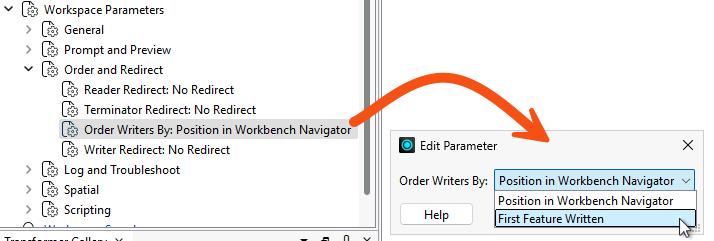
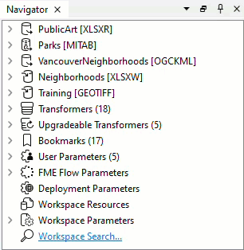
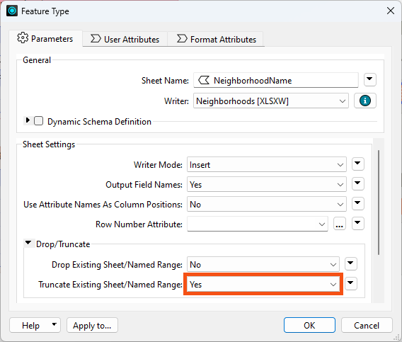

We've updated this course, so the videos don't exactly match the lessons. However, we've included them for you to review, and we will update them in a future release.
After completing this lesson, you’ll be able to:
In this lesson, you will:
We've updated this course, so the videos don't exactly match the lessons. However, we've included them for you to review, and we will update them in a future release.
There are various ways to speed up writing data. Compared to reading, tuning the underlying systems is a more critical improvement; the number of features is less significant, as it's much harder to write extra data unintentionally.
If you are writing to a file system, make sure the disk is fast and responsive – use solid-state drives – and that the operating system is not busy writing other files simultaneously, as the latter could cause a significant bottleneck.
Also, check if you are using RAID; some configurations need multiple writes and can slow down a translation.
Existing indexes and joins can slow the process down if you are writing to a database. In many cases, it's quicker to drop an index, write the data, and recreate it.
More information on database performance with FME comes in the later lesson, Optimize Database Performance.
The most important technique for improving writer performance involves the scenario where a workspace has multiple writers. In short, you must ensure that the writer receiving the most data is written first.
While record counts entering writer feature types are an approximation of the size of your data, the size of features can vary wildly. Compare a feature with a single short integer attribute and no geometry to a feature with a large satellite image or one with hundreds of complex attributes or list attributes. To determine an optimal writer order, you should take the size of features into account as well.
The reasoning is that the first writer in a workspace starts to write data as soon as it is received. Other writers cache theirs until they are ready to start writing. Therefore, if the workspace writes the largest amount of data immediately, it won't have to store as much data in a cache. This can improve performance tremendously, mainly when the translation is unbalanced; for example, one million features go to one writer, and only ten go to another.
Think of it as an airport. Loading the busiest flights first is more efficient because it empties the terminal waiting areas quickly. For more information, see this blog post.
There are two ways to affect the writing order.
Firstly, each writer is listed in the Navigator window in Workbench and can be re-ordered by moving them up and down in the list in the Navigator window:

The first writer in the list will write first. Therefore, it should be the one to receive the most data.
The second method is to use a workspace parameter called Order Writers By:

If you set this parameter to Position in Workbench Navigator, the order of writers defined in the Navigator takes priority. If you set it to First Feature Written, the writer receiving the first feature will be the first to start writing data.

Jennifer is continuing her code review of a colleague's public art workspace. The workspace writes to two destinations, a GeoTIFF writer and an Excel writer, and the much smaller spreadsheet is currently written first. Jennifer needs to find out whether that order is costing the workspace memory.
In this exercise, you will:
The spreadsheet is written first, so the much larger GeoTIFF files sit in a cache waiting their turn. Writing the largest output first lets FME start writing it as soon as features arrive and hold far less in memory.

You have put the writer that receives the most data first, so the largest output is written as it arrives rather than cached until the smaller one finishes. The next lesson, Optimize Transformer Performance, continues this code review from the point you have reached.
The Excel writer currently deletes and recreates the whole spreadsheet on every run. Emptying the existing sheet instead can be very marginally quicker, and the same question matters a great deal more when the destination is an indexed database table. Change the workspace so it empties the existing sheet rather than recreating the file, then run it again and compare.
Two parameters control this, and they sit at different levels. The first is on the writer itself, the second on the writer feature type.

The improvement here is unlikely to be dramatic. The point is the habit: when you review a workspace for performance, ask whether each destination is being rebuilt from scratch when it could be reused.